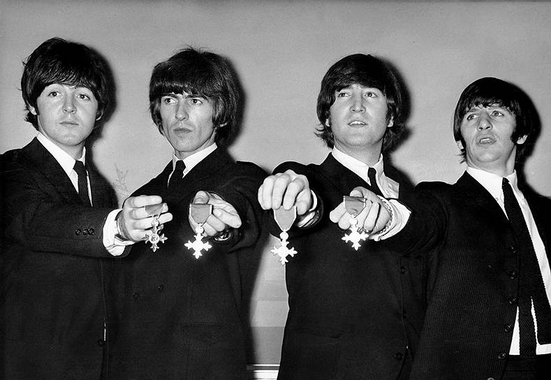
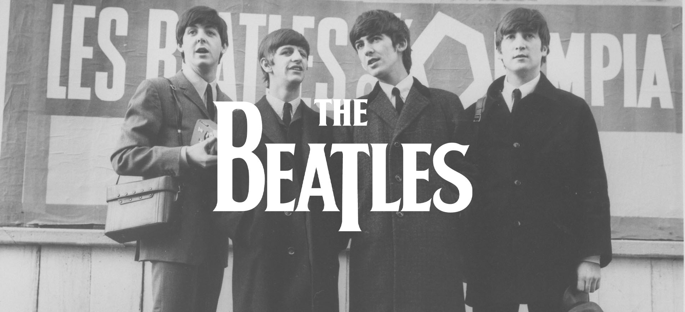

Основная информация о группе
Название: "The Beatles" ("Битлз", отдельно участников группы называют "битлами")
Год основания: 1960 год
Страна: Великобритания (г. Ливерпуль)
Состав группы:
- 1. John Lennon (ритм-гитара, соло-гитара, клавишные, бубен, маракасы, бас-гитара, губная гармошка, вокал)
- 2. Paul McCartney (бас-гитара, клавишные, бубен, маракасы, бас-гитара, губная гармошка, вокал)
- 3. George Harrison (ритм-гитара, соло-гитара, клавишные, бубен, маракасы, бас-гитара, губная гармошка, вокал)
- 4. Ringo Starr (бас-гитара, клавишные, бубен, маракасы, бас-гитара, губная гармошка, вокал)
Создатель: Джон Леннон
Вид: Английский рок
Жанр: Рок
Также в разное время в составе группы выступали:
- 5. Stuart Sutcliffe (соло-гитара, клавишные, бубен, маракасы, бас-гитара, губная гармошка)
- 6. Pete Best (соло-гитара, клавишные, бубен, маракасы, бас-гитара, губная гармошка)
После распада группы, произошедшего в 1970 году, каждый из ее участников начал сольную карьеру.

